This is an updated version of the Hingston Arms page. It has been prepared with considerable help from Alan Lawton, who is a skilled amateur heraldic artist living in New Zealand, and is descended from Tree HX as listed elsewhere on this website. He has provided much background information and has drawn many of the images shown on this page for which I am very grateful.
At least two people with the Hingston seem to have been awarded, or assumed, a coat of arms at some time. The right to bear arms is awarded to an individual, not to a family, although by tradition the coat of arms is passed from father to eldest son. There are complex rules relating to the incorporation of a mother's arms. However, in the middle-ages, anyone could assume arms for themselves, the only rule being that your arms should be distinct from those of anyone else.
Good sources of reference on Heraldry are to be found at the Heraldica site.
There are two distinct sets of arms borne by Hingstons; those in Devon and Cornwall, and those in Ireland.
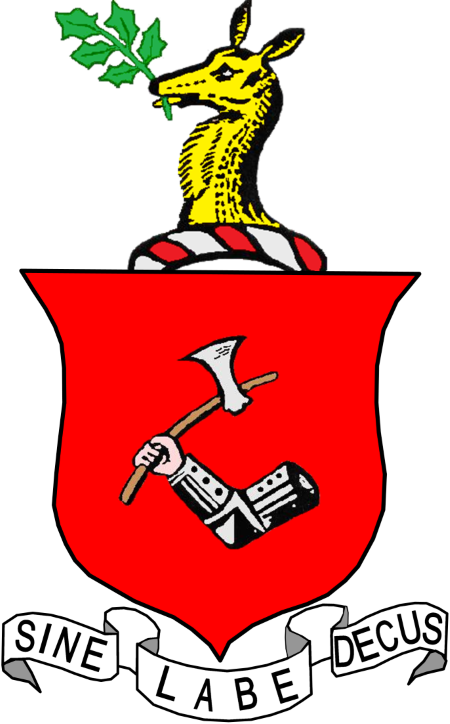
Blazon. Gules [ red ], an arm in armour proper [ in its natural colour ] holding a Danish batleaxe, argent [ silver ]. Crest - A hind's head couped [ cut ] or [ gold ], holding in the mouth a holly slip. These arms belong to HD34. Joseph Hingston of Holbeton and Dodbrooke House, Devon and were held at least as far back as his grandfather HD18. John Hingston. (Described in General Armory, England, Ireland Scotland . Sir Bernard Burke, Ulster King of Arms, 1884, page 493.)
The motto "Sine Labe Decus" can be translated as "Without Stain, Honour"
Many of the features in these arms appear in other versions, but commonly with different mottos. A version displayed on the wall of a member of tree HH in Canada has "Non Mutat Genus Solum" (The clan alone does not change)
Another version, of unknown provenance, reads "Absque Labore Nihil", (without work, nothing)
There are also versions with the arm without armour, and others with the arm straight, and also with different styles of axe- see table below. Note that I have found no other reference to Hingenson or to any of the family in Buckingham.
|
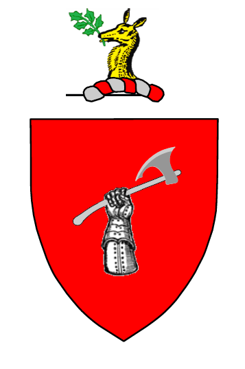 |
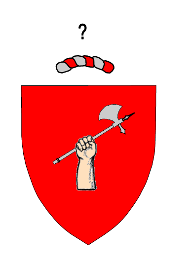 |
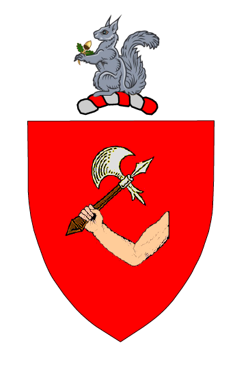 |
|
"Arm in Armour”
Hingston, Holbeton, & Dodbrooke House Co. Devon Gules an arm in ar-mour proper holding a Danish battle axe argent. |
“Naked Arm couped” |
“A Naked Arm embowed”
Hingenson Co. Buckingham Gu. A naked arm embowed issuing from the sinister holding a battle-axe erect ppr. British Armorial Page 903 |
|
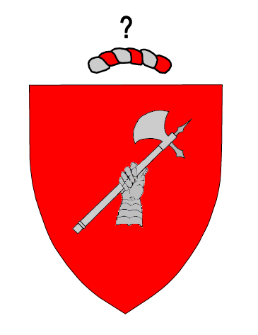 |
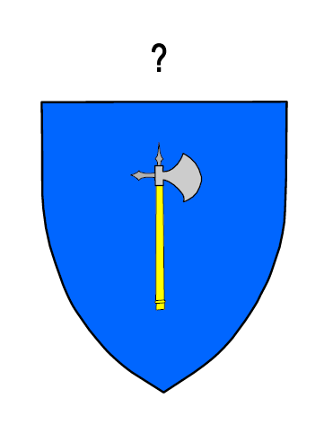 |
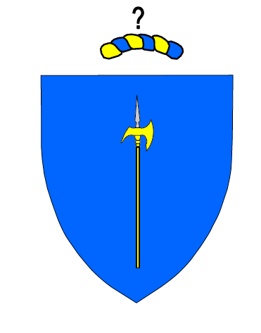 |
|
“Armed Hand”
Hingston Co.Devon Gu. An armed hand holding a battle-axe arg. British Armorials, |
"Battle-Axe" |
"Halbert"
Hengeston Azure, a halbert or the edge to the sinister, its lance head argent Source Glover |
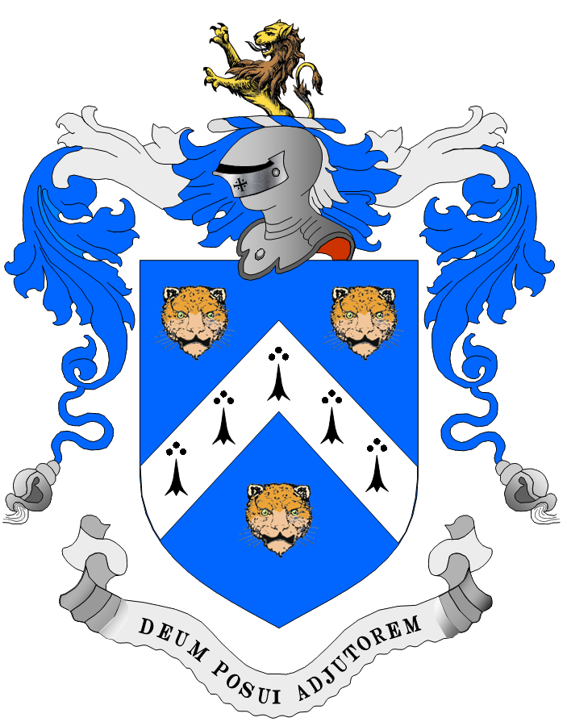
These arms were supposedly derived from those of Major James Hingston, an officer in the army of the English Parliament. The arms seem to have been granted to his son James, who purchased Aglish on his retirement from the Commisariat in Ireland. They are described as Azure a chevron ermine between three leopard's faces salient proper. Crest. A demi lion rampant proper. Motto Deum posui adjutorem (I have taken God for my helper).
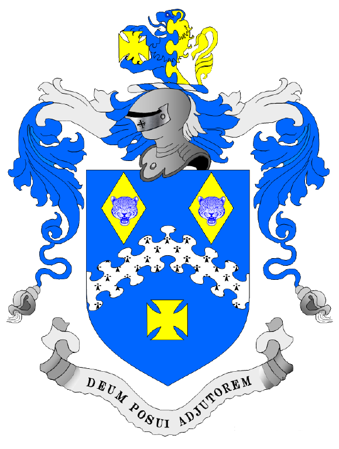
The image, which is redrawn from the Irish Book of Arms replaces the lower Leopard's face with a Maltese Cross. It seems that this was adopted later by the family
The image below is taken from a painting hanging on the wall of a member of Tree HH in Canada. It is signed W.A.Black, Sept 18, 1937, and has written on the back "Hingston Coat of Arms - Danish battle-axe held in hand of knight in armour. Hind's head with sprig of holly". The motto "Non Mutat Genus Solum" has been translated by Frederick Sweet as "The clan alone does not change".
Non .............. Mutat ....... Genus ...... Solum
(Not or No) (change) (race or family) (only)
The colours in this view are not believed to be accurate - they do not follow the rules of "tincture" which apply to virtually all heraldry; they were designed to ensure that the arms are clearly distinctive in the heat of battle.
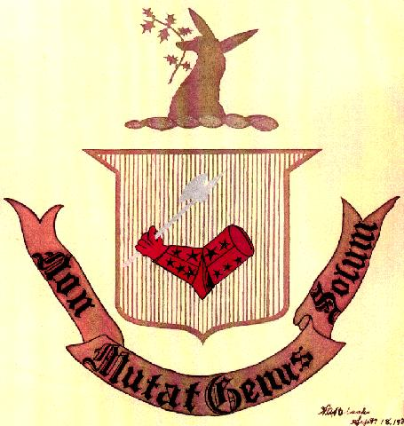
A coat of arms is displayed in the Allen and Dymond tree (which relates primarily to Tree HD) as a drawing; my only copy of it is of very poor quality.
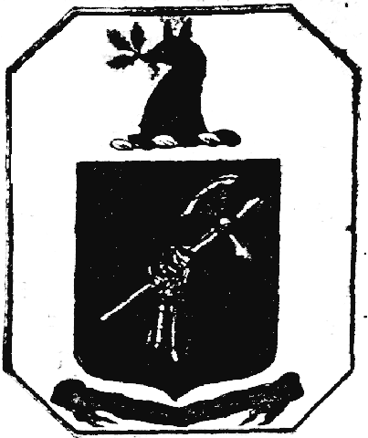
In this version only the fore-arm is shown and it is upright rather than horizontal. The leaves in the deer's mouth look to me like oak rather than holly but on such a poor picture it is difficult to be sure. The motto is illegible.
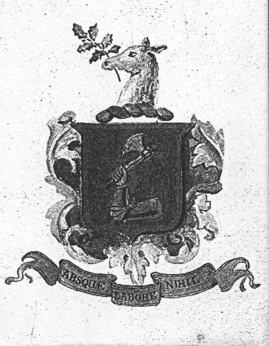
This version of the arms has been sent to me by Richard Hingston who is unaware of how it came into his family's possession. The significant difference from the other versions is the different motto "Absque Labore Nihil", which if my bad Latin is anything to go by means "without work, nothing". (Added 5/9/2000, CJB)
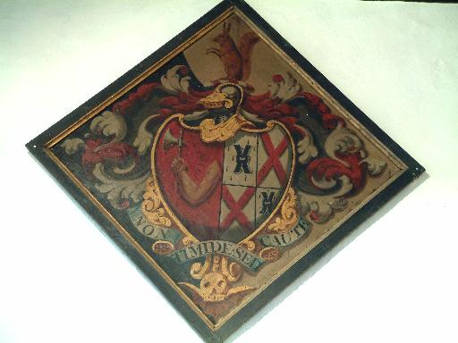
In Ruislip Church, Middlesex, there is a hatchment showing the naked version of the arms, as attributed by Papworth and Burke to the Buckinghamshire Hingensons. It is tentatively ascribed to John Hingston, mentioned in an enclosure award of 1824, but no further biographical details have yet been found. His wife appears to be a Mills. The crest is a squirrel sejeant. (This probably relates to HP10. John Hingston but does not agree in all details with what we show on that page.)
From the Will of Mary Anne Hingeston, Widow of Ruislip, Middlesex 30 March 1849 PROB 11/2089. She was the widow of John Hingeston; she had been born Mary Ann Milles and died 1849; her husband was John Hingeston of Hatton Garden, originally of Ipswich, who died 1811 (Will of John Hingeston of Hatton Garden, Middlesex 16 October 1811 PROB 11/1526). Their marriage licence is dated 1798. Although she was buried in St Martin's Ruislip, her husband had asked to be buried in Ipswich. It is possible there was some estrangement between them; the Hingeston family was extensive, as the will of his great-nephew also attests, yet his widow pointedly ignores them all in favour of Milles nephews and nieces. Perhaps the John Hingeston's bequests to his bastard daughter provide a clue to this!
The description is as follows:-
Dexter background black Gules a dexter arm embowed in fess issuant from the sinister or holding a battleaxe in pale argent (Hingeston), impaling, Quarterly, 1st and 4th, Ermine a millrind sable (Milles), 2nd and 3rd, Argent a saltire gules ( ) Crest: A squirrel sejant proper. Mantling: Gules and argent. Motto: Non timide sed caute (Not cowardly but cautious) Winged skull below. For John Hingeston of Hatton Garden, originally from Ipswich, who married May 1798 Mary Ann Milles and died s.p.legit. 1811, buried in Ipswich; she died in Eastcote 1848, buried in Ruislip. (Prerogative Court of Canterbury wills at Public Record Office; Vicar General Marriage Licences; Enclosure Award of 1824 probably refers to his nephew or great-nephew, both John)
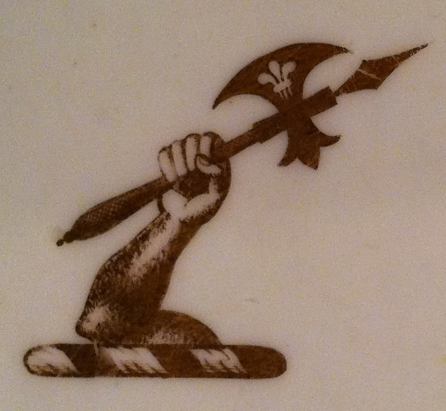
Glover's Ordinary is a collection of Heraldry carried out in Elizabethan times. It appears to feature at least two Heyngeston lines - see above
According to Gatfield - Guide to Printed Books and Manuscripts relating to Heraldry amd Genealogy, there is a Hingeston pedigree, with notes by D.E.Davy. British Museum Add. MS. No. 19135. (moved from Odds and Ends page)
HM#17 Francis Charles Hingeston-Randolph said that the Courtenays, Earls of Devon, quarter the Hingeston Arms, one of them having married Elizabeth Hingeston, of Wonwell, one of the coheiresses of that line? It is so. In the visitation of 1620 (Devon) the Arms are given are given thus; quarterly, 1 Courtenay; 2 Redvers; 3 Hingeston; 4 Courtenay. However, modern representations of the Courtenay Arms do not show the Hingston Link.
(added 14 Aug 2015)
In reference books we find the following.
Burke's The General Armoury of England, Scotland, Ireland and Wales gives:-
Return to the Hingston One-Name Study
Page updated by Chris Burgoyne on 31st January 2020